Meet Rick
That's how we met Rick!

What we expected
How do we improve Rick's working efficiency?
What we found
How do we improve Rick's working experience?
From a tool to a present
Rick said he loves all types of music, and he listens to music at work sometimes! That is a great start for us. We decided to design a device that provides company and joy to Rick at the same time. A music player that caters to his daily work fits the description. However, to add more personal elements to the design, we thought of a radio that preserves important family sentiments. Paris could remind him of his daughter. Las Vegas could remind him of his son. We also added several ad-free Pittsburgh local stations, so he could switch back to music that felt familiar to him.
We also kept the dimensions close to a standard brick, used laser-cut 1/8 inch plywood for the enclosure, and kept the plywood unadorned because Rick liked the plain wood look.
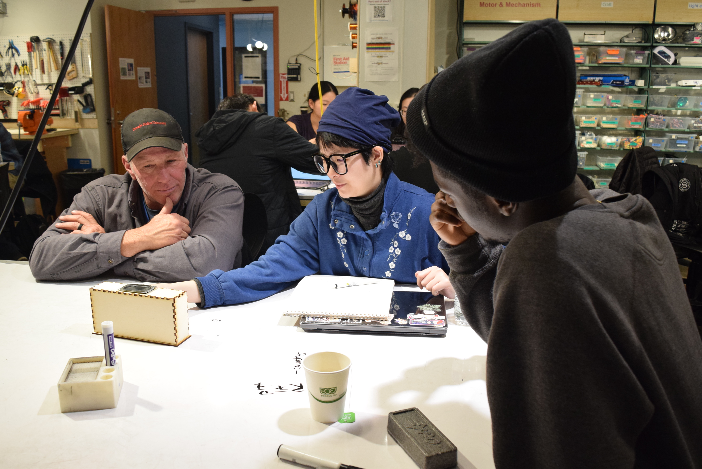
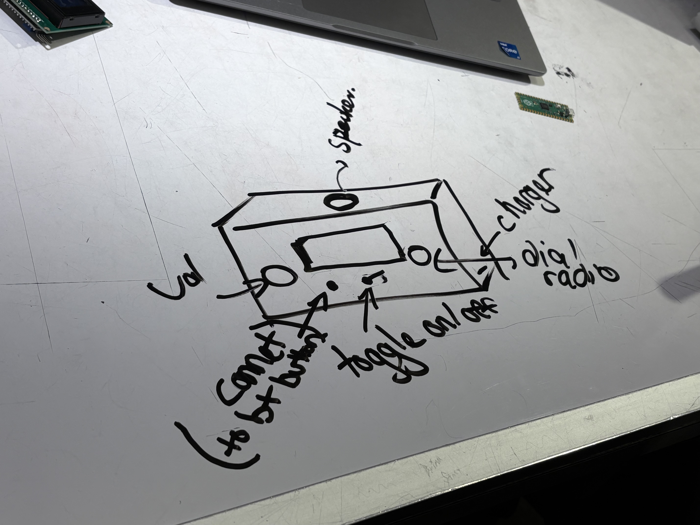
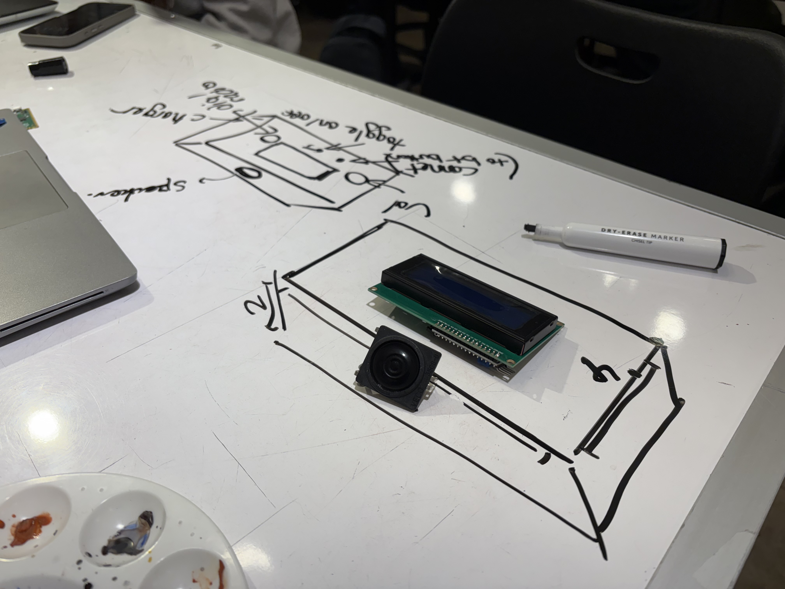
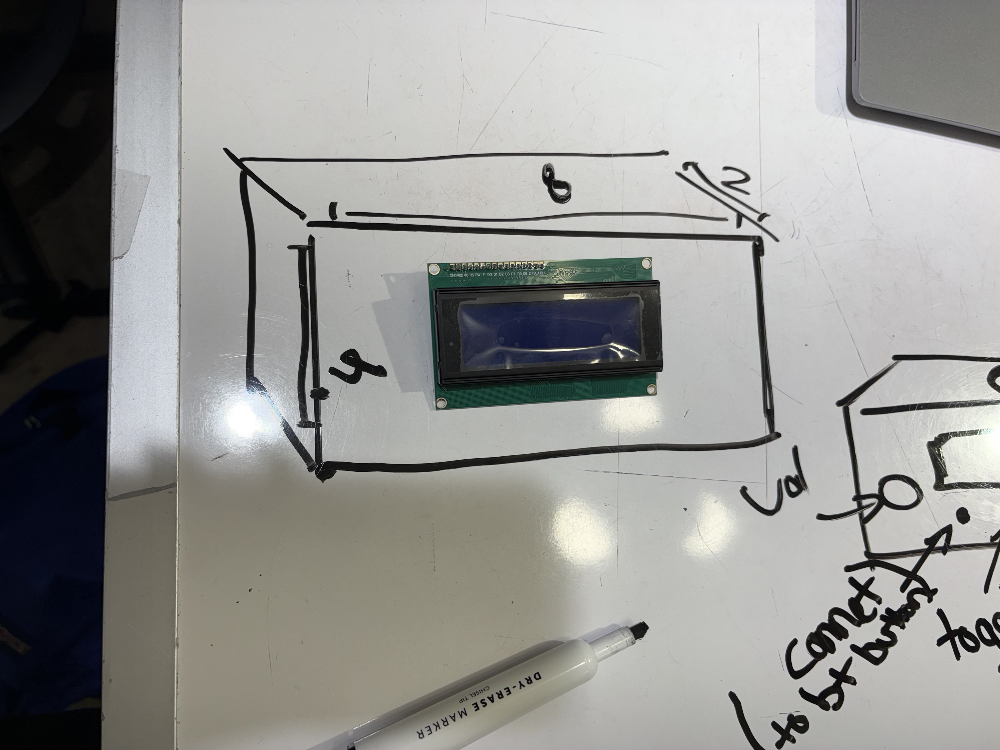
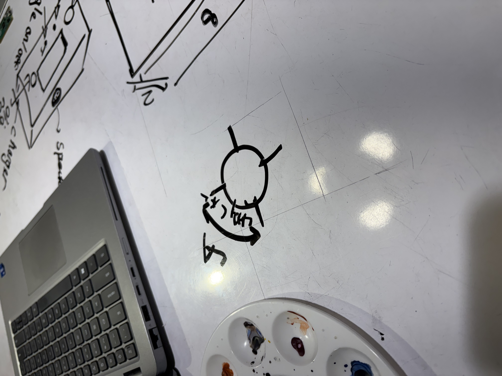
Prototype & Feedback
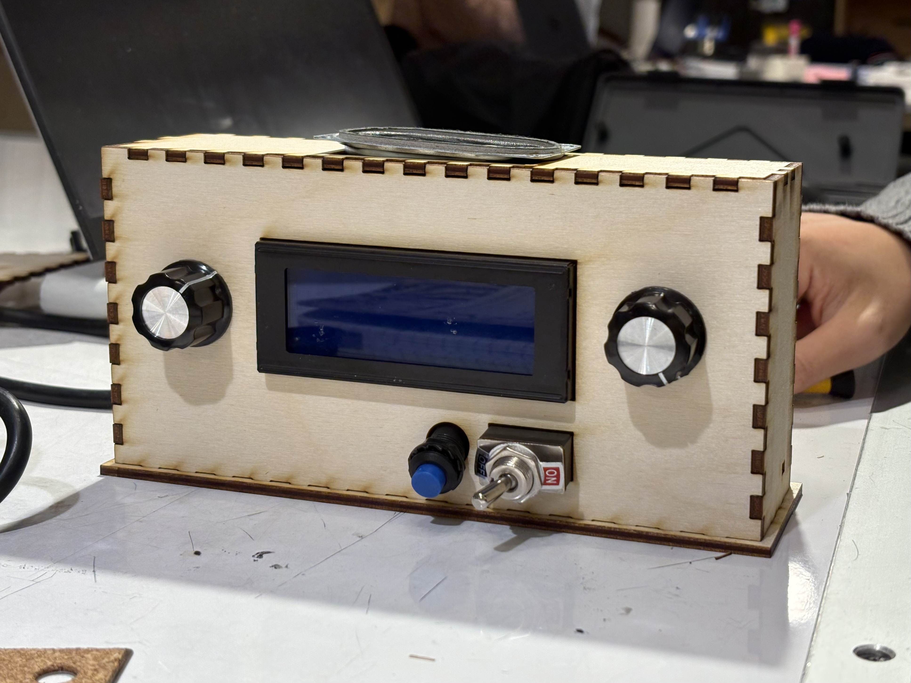
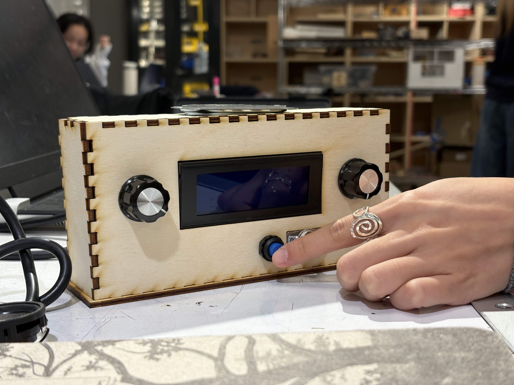
We made a non-working plywood prototype first, because we wanted Rick to react to the size, layout, and interaction before we moved further into electrics.
Rick liked the brick form and even preferred the plain wood over a painted finish. He noticed that the toggle did not read as an on/off switch, and the two dials were too similar. Those are very helpful feedbacks moving on.
Rick's Radio
A brick-sized radio for the hours Rick spends working alone, with stations tied to the places and people he loves.

At 5 a.m., Rick starts his day with the radio on his cart. He turns the station dial to Paris. The LCD confirms his choice, and the music brings his daughter to mind.
The radio is small enough to travel with him. Its shape is as familiar as the bricks he has spent decades laying.
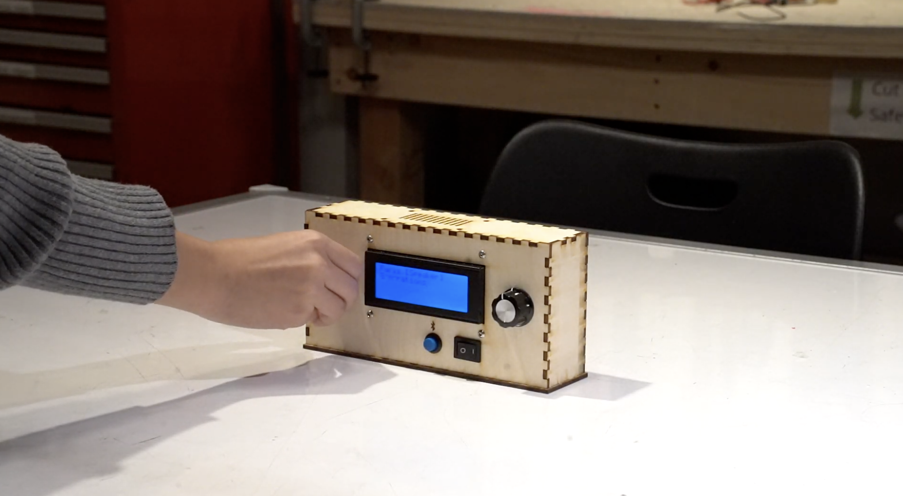
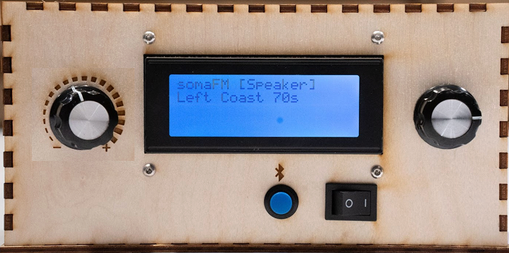
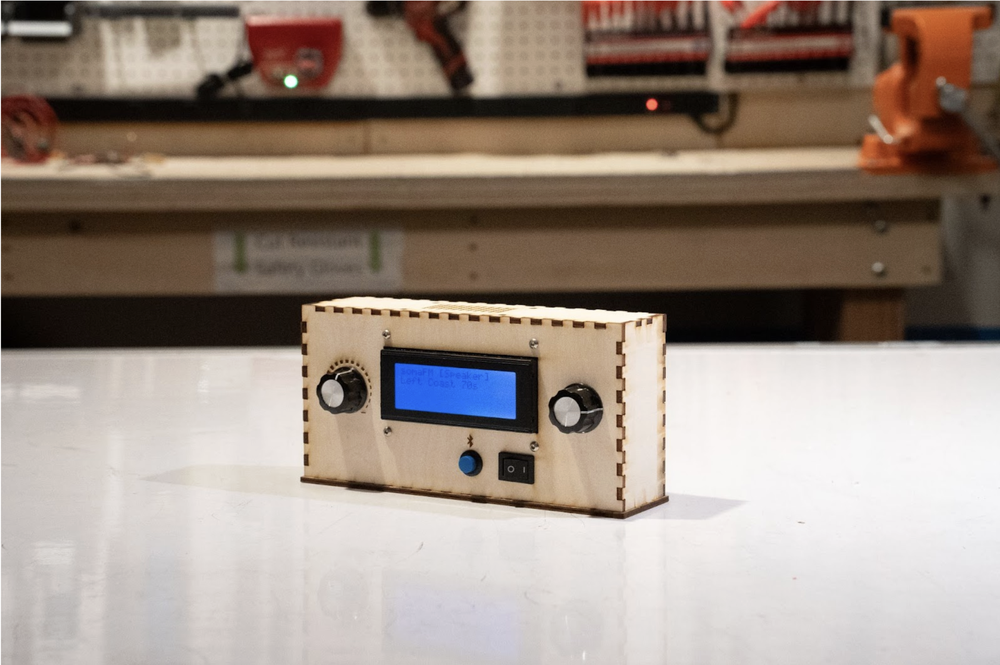
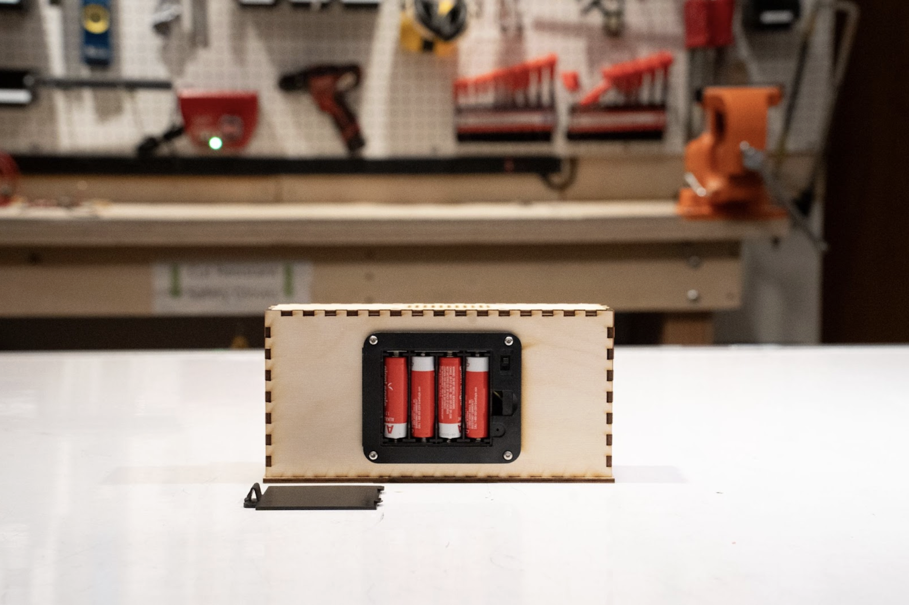
Outside, he can press the Bluetooth button and listen through his earbuds. Another turn of the dial can take him to Las Vegas, a place connected to his son. Pittsburgh stations are there too, ready when he wants something closer to home.
Two dials, one button, one switch, and a small screen let the radio join his routine without asking him to change the way he works.

A familiar object can carry a song, a place, and the thought of someone far away into the workday.
Technical Pivot
We started with a Raspberry Pi Pico 2 W, but it could not handle the live radio streaming and Bluetooth audio this project needed. We switched to a Raspberry Pi Zero W with an Adafruit Speaker Bonnet, then revised the wiring and code so the stations, physical controls, LCD, and audio could work together inside a brick-sized enclosure.

Outcome
Rick was happy with the final radio. He liked that it was the exact size of a brick, that it kept the natural wood look, and that it turned his family stories into something he could carry through a work day.
What surprised us was what moved him most. We had designed the emotional core around cities and family connections, but Rick, a craftsman himself, was most visibly moved by the fact that someone had built something for him by hand, whether it is the joinery of the enclosure, the hand-soldered circuits, or the care in the physical details.